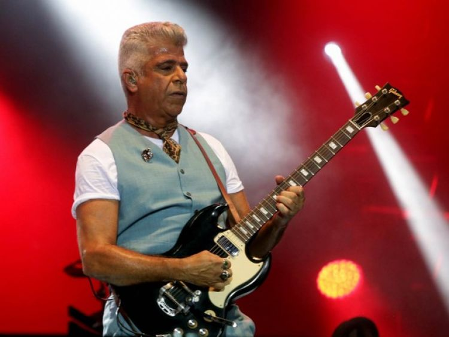

NOTÍCIAS
Lulu Santos participa do Programa Legendários ****************************************************************
O cantor, compositor, guitarrista e produtor Lulu Santos , gravou nesta terça-feira, dia 11 o Programa Legendário da Rede Record. Na oportunidade, o diretor nacional da instituição, Zacarias Pagnanelli cumprimentou o cantor em nome da diretoria e seu presidente. Lulu Santos agradeceu o prestígio que recebe ao participar de atrações da Record.
Continue lendo...Lulu Santos faz show em Salvador em setembro ****************************************************************
O cantor Lulu Santos fará um show em Salvador no próximo dia 12 de setembro. O show começará a partir das 21 horas no Museu Du Ritmo. No repertório, estão esperadas as músicas de seu último trabalho "Toca + Lulu".
Continue lendo...Show de Lulu Santos encerra projeto na praia em Brasília ****************************************************************

O projeto que montou uma praia artificial à beira do Lago Paranoá encerrea suas atividades com um show de Lulu Santos , no dia 29 de agosto. Na apresentação, o cantor vai embalar sucessos como "Assim Caminha a Humanidade" e "Toda Forma de Amor".
Continue lendo...